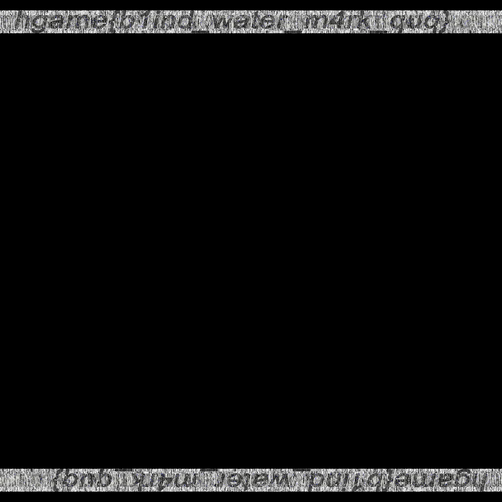

HGAME Week3 Writeup
没想到节后比春节时的事情还更多，最后一两天终于赶上末班车，上了上分。基本都是看着 Hint 做的，难度比别人低了很多很多…不过反正是学习嘛 XD
{ Web }
送分的SQLi [100]
先敲个 1' or '1'='1 和 1 or 1=1 看看，确认没有单引号包裹。然后 order by 2，再来点一般套路：
1 | 1 union select 1,table_name from information_schema.tables where table_schema=database()` |
{ Re }
01 Waifu [300]
哇！图片！那先通过 BeginPaint 试试水找一下函数咯~
1 | if ( Msg == 0x102 ) // WM_CHAR |
然后就是对本题的主角 check() 进行分析了：
1 | // 伪代码 |
中间一大段（应该是）SSE4 指令相关的计算，数据来源为 Flag 前 8 位。由于前 8 位已经确定了，直接将其视作黑盒，扔进 x32dbg 拿到黑盒的输出即可。黑盒的后边有一个 do while，用于对 Flag 后四位进行验证。这样的代码共有相似的两节，但是第一节已足够确定 Flag 后四位，第二节我就直接忽略啦。接下来，根据限制条件对后四位进行爆破即可，Python 代码如下：
1 | for i1 in range(32, 127): // printable |
02 Another Waifu [350]
拖进 IDA 发现要我手动载入，查了一下壳，发现加了层 UPX，脱壳后的文件扔进 IDA。依旧通过字符串来定位函数，看到这一段：
1 | // 伪代码 |
将输入的字符串一番操作后与一大串数据比对，再跟进一下子函数。子函数分为三部分，第一部分如下：
1 | length = 7 * (strlen(input) / 7); // 七位一组 |
大致意思是将输入分组，7 byte 一组，然后拓展为 8 位的数据。在这过程中没有损失信息，待会可原样返回。然后是第二部分：
1 | // 伪代码 |
这一部分先对两处地方进行一番神奇的操作，然后将我们需要的数据给 xor 了。看准需要还原的数据，再原样异或一遍即可，待会解密脚本里照抄这一段。然后是第三部分，看不出来名堂，那就扔 x32dbg 跑一跑看看咯。由于脱壳后的程序好像有点小问题，我选择将带壳的文件拖进去，F9 跑一下就能通过字符串找到真正的指令了。先找到到第三部分对应的 do whiile 循环：

这一番操作的数据来源是 0x00B045D0，经过一番不明所以的操作后将结果放在 eax，并复制到 final 里，待会拿来比对。下个断点，再看一下 eax：
神奇！一番神奇但还是不明所以的操作之后，eax 居然就只是将 4 个 byte 颠倒一下顺序而已……至此已明晰本题套路，代码如下，可得 hgame{Ez_Encr7pt_c4n_n0t_sT0p_Ur_pr0gre5s}
1 |
|
{ Pwn }
hacker_system_ver2 [200]
与 ver1 基本一致，区别在于这是 x64（而且发现开了 ASLR），函数前边几个参数在寄存器里而不是栈上，得多一点姿势。先找个好用的 gadget:
0x400fb3 : pop rdi ; ret 就是一个不错的选择。PLT 表里有 puts 函数，直接用其打出 __libc_start_main @ GOT 时，发现拿不到 8 byte，估计是 \x00 的问题，于是我就写了个循环，一位一位地拿。然后用 IDA 打开 libc.so，拿到 "/bin/sh" 和 system() 相对于 __libc_start_main 的偏移量，即可得到 Flag：hgame{damn_it__big_hacker_you_win_the_flag_again}
1 | from pwn import * |
calc [250]
Hint 都给到这种程度了，就照着做了 =。= 借助 ROPgadget --ropchain 生成的 getshell 代码，自己再溢出一下即可，代码如下：
1 | from pwn import * |
Flag：hgame{go0o0o0o00o0o0o0oo00o0d_j0b}
zazahui_ver2 [250]
先在 IDA 里分析分析，跟 ver1 基本一致，不过这一次只能覆盖到一个指针。借由这个指针，可将输入与内存里任意数据进行比对（strcmp）。第一想法当然是最笨的爆破……发现不可能跑完，就稍微思考了一下，决定采用如下方法：首先，根据空字符来猜 Flag 长度，然后从后往前逐位爆破 Flag。这样每次只爆破一位，数量级明显可以接受。
但是脚本写出来后，有一个非常诡异的 Bug，调了好几小时还是调不出来，就跑去问 v 爷爷了。看完 v 爷爷的 exp，发现是因为 sendline() 多了一个换行符，发了 181 个字符，当然表现异常。Flag：hgame{bao_po_flag_is_intersting_LOL}，最终代码如下：
1 | from pwn import * |
{ Misc }
画风不一样的她 [250]
Hint 盲水印，直接找到 BlindWaterMark 这个工具，python bwm.py decode 0.png 1.png 2.png 可得到图片：
